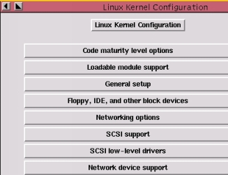
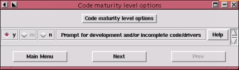

indoglobal.com
| Linux untuk Pemula :: Penggunaan :: Kompilasi Kernel |
|
Hosting by: indoglobal.com |
Kernel adalah program yang dimuat saat boot yang berfungsi sebagai interface antara user-level program dengan hardware. Fungsinya seperti layaknya sistem operasi, menangani task switching dalam multitasking, menangani permintaan membaca atau menulis peralatan disk, melakukan tugas-tugas network serta mengatur penggunaan memori.
Secara teknis Linux hanyalah sebuah kernel. Program lain seperti kompiler, editor, window manager dsb yang disertakan dalam paket hanyalah sebuah distribusi (RedHat, Slackware, SuSE dsb) yang melengkapi kernel menjadi sebuah sistem operasi yang lengkap.
Kadang-kadang sebuah kernel memerlukan konfigurasi agar bisa bekerja optimal pada sebuah mesin. Kernel yang ada pada distribusi RedHat 5.1 adalah versi 2.0.34. Kernel ini pada umumnya sudah bisa langsung bekerja dibanyak komputer tanpa perlu konfigurasi ulang lagi karena didalamnya sudah dimuat dukukungan untuk beberapa device. Konfigurasi ulang bisa dilakukan bila ada tambahan device baru yang belum dimuat atau dianggap muatannya terlalu banyak sehingga memakan banyak memori.
Setelah dilakukan konfigurasi, tahap berikut adalah melakukan kompilasi untuk mendapatkan kernel yang baru. Tahap ini memerlukan beberapa tool seperti kompiler dsb. RedHat telah menyediakan tool-tool tersebut dalam distribusinya.
Tahap kompilasi ini sangat potensial menimbulkan kesalahan dan kadang membuat frustrasi bila terus-menerus mengalami kegagalan. Sebelum mengalami musibah tersebut, mempersiapkan emergency boot disk adalah langkah yang tepat karena pada umumnya kesalahan akan mengakibatkan sistem mogok.
Source kernel versi 2.0.34 RedHat 5.1 sudah disediakan dalam bentuk paket RPM dalam setiap cd distribusinya. Tapi kita masih bisa mendapatkan versi yang lebih baru di web site RedHat atau dibeberapa sumber di internet seperti:
http://www.kernel.org
ftp://ftp.cdrom/pub/linux/sunsite/kernel
ftp://sunsite.unc.edu/pub/Linux/kernel
ftp://tsx-11.mit.edu/pub/linux/source/system
Source kernel tersebut biasanya dalam format linux-X.X.XX.tar.gz dimana X.X.XX menunjukkan nomor versi kernel, misalnya 2.0.35. Nomor versi kernel tersebut terdiri dari 3 bagian: major number, minor number dan revision number yang masing-masing dipisah titik.
Angka 2 pada kernel 2.0.34 menunjukkan nomor major. Angka ini akan jarang berubah untuk waktu yang lama. Perubahan pada nomor ini menandakan adanya perubahan besar atau upgrade terhadap kernel.
Angka 0 pada kernel 2.0.34 menunjukkan nomor minor atau stabilitas. Angka genap (misal 0, 2, 4 dst) menandakan kernel stabil sedangkan angka ganjil menandakan kernel dalam tahap pengembangan atau development. Kernel ganjil mengandung experimental code dan feature terbaru yang ditambahkan oleh developer-nya. Kernel genap pada saat di rilis sudah tidak lagi ada penambahan apapun dan dianggap sudah stabil. Kadang-kadang kernel ganjil ini malah stabil dan biasanya dipakai oleh mereka yang sedang melakukan percobaan terhadap feature-feature baru tersebut.
Dua angka terakhir, 34 menunjukkan nomor revisi. Ini menandakan current patch versi tersebut. Selama tahap pengembangan, versi baru bisa di rilis hingga dua kali seminggu.
Source kernel yang sudah di download biasanya di unpack di direktori /usr/src/.
tar -zxvf linux-2.0.34.tar.gz
Perintah tersebut akan menguraikan file-file ke dalam direktori /usr/src/linux. Bila perlu sempatkan membaca file /usr/src/linux/README.
Konfigurasi dimulai dari direktori /usr/src/linux. Ada tiga cara:
Bila berhasil layar Linux Kernel Configuration akan ditampilkan setelah perintah diatas dijalankan. Ada sekitar 14 menu pilihan dimulai dari Code maturity level options sampai Kernel hacking. Masing-masing memiliki sub-menu bila dipilih dan pilihan yes(y), module(m) atau no(no). Setiap pilihan untuk dimuat/kompile ke dalam kernel atau y akan memperbesar ukuran kernel nantinya. Jadi pilih feature-feature yang sering di gunakan yang di muat ke dalam kernel atau jadikan module untuk feature yang tidak sering di gunakan, misalnya PPP support.


Setelah semua pilihan dianggap sesuai, konfigurasi di simpan dengan memilih save sebelum keluar dari layar menu konfigurasi. Konfigurasi akan disimpan dalam sebuah file. Langkah selanjutnya adalah kompilasi atau dikenal dengan building the kernel.
Siapkan kesabaran, terutama bagi user yang melakukan kompilasi kernel di mesin yang memiliki prosesor lambat dan sedikit memori. Kompilasi bisa memakan waktu 10 menit pada mesin dengan prosesor Pentium yang cepat hingga sampai 1,5 jam pada mesin Intel 386. Waktu kompilasi juga bertambah bila sistem digunakan untuk menjalankan proses lain pada saat itu.
Tetap di direktori /usr/src/linux, jalankan perintah:
make dep; make clean; make zImage
Perintah pertama, make dep, membaca file konfigurasi dan membentuk dependency tree. Proses ini mengecek apa yang di kompile dan apa yang tidak di kompile. Selanjutnya, make clean, menghapus seluruh jejak kompilasi yang pernah dilakukan sebelumnya. Ini memastikan agar tidak ada feature versi lama yang tersisa. Terakhir, make zImage, adalah kompilasi sesungguhnya. Bila tidak ada pesan kesalahan, akan terbentuk kernel yang terkompresi dan siap di instalasi.
Sebelum instalasi kernel, modul-modul yang berhubungan perlu di kompile juga dengan:
make modules
Pastikan tidak ada kesalahan.
Cek lokasi kernel, biasanya nama kernel dimulai dengan vmlinuz, biasanya ada di direktori /boot. Atau buka file /etc/lilo.conf untuk memastikannya. Setelah itu copy file /usr/src/linux/arch/i386/boot/zImage ke direktori /boot dengan nama lain contohnya:
cp /usr/src/linux/arch/i386/boot/zImage /boot/vmlinuz-2.0.34-baru
Catatan: bila tidak ditemukan file zImage, berarti masih ada kesalahan dalam kompilasi.
Sebelum kernel modul di instalasi, sebaiknya backup dulu modul lama. Modul ada di direktori /lib/modules, rename modul dengan nama lain:
cd /lib/modules mv 2.0.34 2.0.34-backup
Keuntungan membackup modul ini adalah bila ternyata nanti modul baru tidak berjalan baik, maka modul lama bisa digunakan lagi dengan menghapus modul baru dan merename modul backup menjadi 2.0.34 kembali.
Selanjutnya, kembali lagi ke /usr/src/linux dan jalankan perintah di bawah untuk menginstalasi modul ke kernel:
make modules_install
Akhirnya, edit /etc/lilo untuk menentukan kernel yang akan di pakai dan jangan lupa menjalankan lilo:
lilo
Selesai, reboot sistem dan lihat hasilnya.
Setiap di keluarkannya kernel versi baru juga di keluarkan sebuah file patch. File patch ini jauh lebih kecil dari file source kernel sehingga jauh lebih cepat bila digunakan untuk upgrade kernel.
File patch hanya bekerja untuk mengupgrade satu versi kernel dibawahnya. Misalnya, versi kernel 2.0.27 hanya bisa diupgrade dengan file patch 2.0.28 menjadi kernel 2.0.28. Begitu pula bila kernel 2.0.27 tersebut ingin diupgrade menjadi kernel 2.0.30 maka diperlukan file patch 2.0.28, 2.0.29 dan 2.0.30. Perhatikan, kernel 2.0.27 tidak bisa langsung dipatch menjadi 2.0.30 tanpa melalui file patch 2.0.28, 2.0.29 dan 2.0.30.
File-file patch tersebut juga tersedia pada direktori yang sama di FTP dan Website yang biasa menyediakan source kernel.
File-file patch tersedia dalam format .gz, setelah di download, pindahkan file patch ini ke direktori /usr/src. Pastikan source kernel versi lama sudah di instalasi juga. Pada direktori yang lama jalankan perintah:
gzip -cd patch-2.0.28.gz | patch -p0
Setelah itu periksa apakah ada file yang berakhiran .rej di direktori /usr/src/linux. Bila ditemukan file seperti itu maka patch yang dilakukan tidak berhasil, periksa kembali apakah file patch yang dipakai sudah benar. Beberapa file patch menurut berita kadang-kadang memang tidak sesuai untuk sebuah source kernel, terutama source kernel yang telah di modifikasi oleh developer untuk kepentingan distribusi Linux. Saya tidak tahu pasti mengenai hal ini.
| Linux untuk Pemula :: Penggunaan :: Kompilasi Kernel |
Komentari Halaman Ini (di Window Baru) |